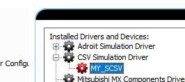
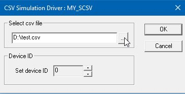
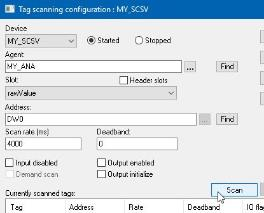
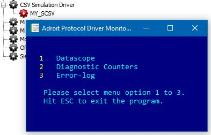
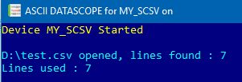
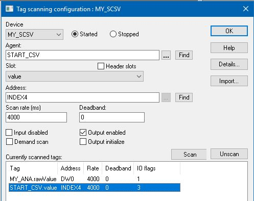
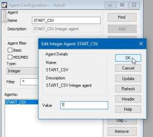
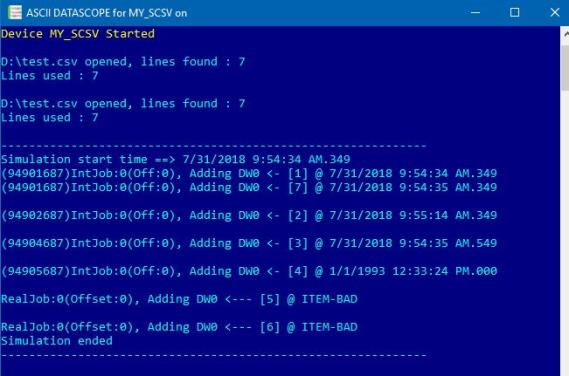

The SimCSV driver is not a true driver in the sense that it does not communicate to a front-end device; instead, it allows a user to define the required timestamped sequence of integer, real or Boolean values to simulate the scanning or logging of a real-time process value. If necessary, you can also:
The SimCSV driver simply reads in a .CSV file that specifies which of its addresses should be changed in value at whatever time and/or whatever status (quality) should be applied to change in value in order to define the required sequence.
Therefore, this driver can be very helpful when testing or demonstrating other agents like the Analog or DBLog agent, that require real world scanning and/or logging of real-time process values.
Seq T+x, Address, Value {, Time offset from seq, Fixed-Timestamp, Status}
Note: This .CSV file structure is case insensitive.
The following first three entries are required, but the others entries can be omitted:
Seq T+x: this specifies how long after the .CSV file was initially loaded (or reloaded) to change the specified address to the specified value. So a value of 0 performs this change in value as soon as the .CSV file is loaded. But any positive value specifies the number of seconds to wait after the .CSV file loads before the specified address is changed to the specified value.
IMPORTANT: If this time offset is configured then the order in which the values of the specified addresses are changed are NOT determined by the sequence of rows in the .CSV file, but by the specified time offsets instead!
Address: the address (and therefore the applicable data type) to which the specified value will be written.
Value: the required value to write to the Address at the specified time.
For instance:
0 , DW0 , 1
In this case as soon as the .CSV file is loaded a value of 1 is written to the DW0 address (which is presumably being scanned to an Integer or Real tag). Since when no time is specified then the time of Now is assumed and when no status is provided then a status (quality) of good is assumed.
Scan an Integer to one of these INDEX addresses either to read the value of the associated internal variable or to perform the associated action at runtime:
|
Integer Address |
Function |
Description |
|
IN0 |
(last callback) |
The time that the last address changed in value. |
|
IN1 |
(Time since start) |
The time that has elapsed since the .CSV file started. |
|
IN2 |
(Reload csv) |
Action: reloads the .CSV file of this driver. |
|
IN3 |
(Execute csv) |
Action: starts processing the .CSV file of this driver. |
|
IN4 |
(Reload and execute) |
Action: reloads and processes the .CSV file. |
|
IN5 |
(Iteration count) |
The number of times that the .CSV file has reiterated. |
Use the following applicable addresses to write a value to an Integer, Real (Analog) or Boolean (Digital) tag:
|
Address Type |
prefix |
Min Range |
Max Range |
BOOLEAN Tag |
INTEGER Tag |
REAL Tag |
STRING Tag |
|
Dataword |
DW |
0 |
9 |
- |
DW0-9 |
DW0-9 |
- |
|
Databit |
DI |
0 |
15 |
DI0-15 |
- |
- |
- |
Note: This driver does NOT support the writing of values to String tags.
If you want to skip one of the optional entries then include the comma and a space as the driver does a fixed lookup.
For instance to only specifying the Status, specify TWO successive commas and spaces first:
5 , DW0 , 5 , , ,I
The sequence time offset can be either a float or an integer value relative to the sequence, meaning that if the sequence is active the time (NOW) is used and the offset, if any, is appended to the active time.
This offset can be either positive (future or forward in time) or negative (historical or back in time).
For instance:
0,dw0,123 ……………… omitted
0,dw0,123,1 ……………. Time 0 + 1
0,dw0,123,-4 ……………. Time 0 - 4
Instead of the specifying the required number of seconds that are either added or subtracted from the start time when the .CSV file is loaded you can also specify the required timestamp using an IEEE754 float string or an OLEDT using the system locale settings.
For instance:
0,dw0,123,29/09/2018 12:33:23 …… a specific datetime
This column allows you to specify the required timestamp of this change in value that uses the locale settings of the computer on which this is run.
For instance:
4 , DW0 , 4 , , 1993/01/01 12:33:24
The status (quality) that the system will apply to this update, which may or may not override the specified timestamp, as follows:
[] – Good … Driver will send a {NOW} or {SPECIFIED} timestamp
[I , i] – Item bad … Driver will send a {-2} timestamp just for this item
[J , j] – Whole job that this item belongs to is marked bad {NULL} with this event… {old method}
[K , k] – Whole job that this item belongs to is marked bad {-2} timestamp with this event… {new method}
[D , d] – Whole Device is bad all its jobs will be marked bad {NULL} with this event… {old method}
[E , e] – Whole Device is bad all its jobs will be marked bad {-2} timestamp with this event… {new method}
IMPORTANT: It is not possible to update an item to a historical time and mark it bad at the same time, it is only possible to mark the latest value bad at time now!
Lines can be commented out using “//”
For instance:
//This is a comment
The :reiterate command can be specified in the last line of the .CSV file to cause this file to loop around back to the top.
For instance:
:reiterate
Tip: In this case you can query the IN5 address to determine how many times the .CSV file has been repeated.
The following provides a number of CSV rows followed by an explanation of what this means:
0 , DW0 , 123.45 , 0 , I
At start time = T+0, which is now, update DW0 with 123.45 with a timestamp of now (same as index) and mark the item bad (new method) (this will actually change the new time to -2).
IMPORTANT: It is not possible to update an item to a historical time and mark it bad at the same time; it is only possible to mark the latest value bad at time now!
0 , DW1 , 0 , , 1973/12/3 12:33:45
At start time = T+0, which is now, update DW1 with 0 with a timestamp of 1973/12/3 12:33:45.
0 , DW2 , 45
At start time = T+0, which is now, update DW2 with 45 with a timestamp of now (same as index).
1 , DW0 , 123.46 , 1
At start time = T+1, which is now, update DW0 with 123.56 with a timestamp of now (same as index).
2 , DW0 , 123.46 , , , J
At start time = T+2, which is now, update DW0 with 123.46 with a timestamp of now (same as index) but the whole job will be marked bad {old method – returning failed (timestamp not overwritten)}.
For instance, you can copy the following lines as-is into a text editor and save it as your CSV file in an accessible folder, in this case it was saved as the following .CSV file: D:\test.csv:
Simple CSV:
Due to the numerous methods provided by the SimCSV driver to create a sequence of timed events, the following lines simulate an Integer value changing between 1 and 10 for a total of 16 seconds:
0 , DW0 , 1
2 , DW0 , 9
4 , DW0 , 2
6 , DW0 , 3
8 , DW0 , 7
10 , DW0 , 5
12 , DW0 , 6
14 , DW0 , 8
16 , DW0 , 2
Advanced CSV:
The following lines demonstrate the usage of much of the functionality provided by SimCSV driver and is provided so that you can play around with these various settings, as needed:
Note: This how to guide assumes that the .CSV file contains this content.
0 , DW0 , 1 , 0
0 , DW0 , 7 , 1
1 , DW0 , 2 , 40
3 , DW0 , 3 , 1.2
4 , DW0 , 4 , , 1993/01/01 12:33:24
5 , DW0 , 5 , , ,I
6 , DW0 , 6 , , ,I
For instance in the Driver Configuration page of the Config Editor, right click the CSV Simulation Driver and select Add device and provide the required 8 character name, in this case MY_SCSV:

IMPORTANT: In this case, the status of the device is unhealthy because the test.csv file contains BAD scan jobs and that is why its icon is red.
For instance in the Driver Configuration page of the Config Editor, right click the device, in this case MY_SCSV and select Configure.
In the device configuration dialog, browse in the required .CSV file that you have created into the Select csv file field, in this case D:\test.csv.

Note: The Device ID simply allows you to run multiple CSV files and to scan additional agents (for instance once all of its available addresses are used).
Create and start a Device agent for this device in Adroit.
In this case, an Analog agent called MY_ANA was added and scanned to the DW0 address of the MY_SCSV device (that was specified in its test.csv file).
Note: When the MY_SCSV device is selected from the Device drop-down list of the Tag Scanning Configuration dialog you are asked it you want to automatically create it, in which case select Yes and then you also need to select the Started radio button to start this device.

After specifying the required address for this Analog agent, in this case DW0 then click the Scan button.
This will ensure that the value of this Analog agent will be set to the specified values once the simulation begins.
Open the Datascope for this device to ensure that there are no communication errors.
For instance, in the Driver Configuration page of the Config Editor, right click the device, in this case MY_SCSV and select Diagnostics, which displays the following dialog:

In this case, type a 1 into this window to display the DataScope (in ASCII mode) so you can assess current communication status for this device, which in this case displays the following:

This indicates that the specified .CSV file has been successfully loaded (that there were no errors detected when processing all the lines). However this .CSV file needs to be explicitly executed in order to begin the required simulation.
IMPORTANT: The .CSV is NOT automatically executed, the device needs to be manually configured to do so to start the specified simulation. This is by design, to provide you with total control over when you want your simulation to begin.
Start the simulation, by adding an Integer tag and scanning it to the applicable INDEX for this driver as an Output enabled value (check the Output enabled checkbox in the Tag Scanning Configuration dialog BEFORE clicking the Scan button).
In this case an Integer tag called START_CSV was created and scanned to the IN4 address (this index address both reloads and processes the .CSV file).
Tip: If you forget to check the Output enabled checkbox in the Tag Scanning Configuration dialog BEFORE clicking the Scan button, then click the Unscan button, check this checkbox and then click the Scan button.

Edit the value of this Integer agent and set it to a value of 1. In this case, edit the START_CSV Integer agent and change its Value field to 1 and click the OK button.

When viewing the Datascope for this driver (which should still be open) you should see the following:

Note: The reason this .CSV file was loaded twice was because in this case IN4 was used which both reloads and executes the .CSV file.
Tip: If you want this simulation to automatically repeat the lines of the .CSV then add the :reiterate command to the last line of the .CSV file.